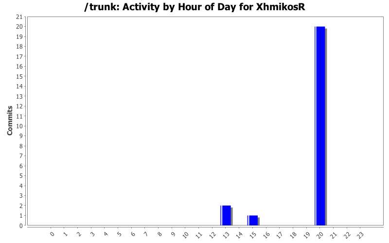
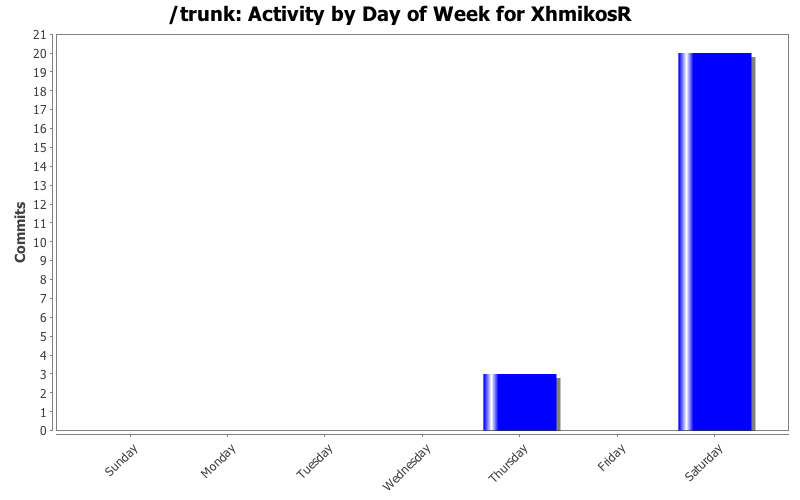
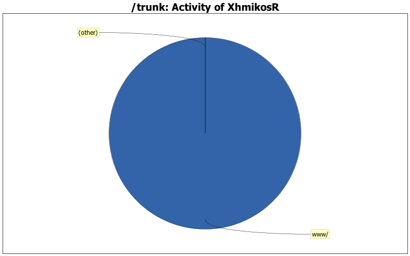

| Directory | Changes | Lines of Code | Lines per Change |
|---|---|---|---|
| Totals | 23 (100.0%) | 2 (100.0%) | 0.0 |
| www/ | 5 (21.7%) | 2 (100.0%) | 0.4 |
| src/Utils/MiscUI/ | 2 (8.7%) | 0 (0.0%) | 0.0 |
| contrib/diff-scripts/ | 8 (34.8%) | 0 (0.0%) | 0.0 |
| contrib/choco/ | 6 (26.1%) | 0 (0.0%) | 0.0 |
| contrib/ | 2 (8.7%) | 0 (0.0%) | 0.0 |

www: update dependencies.
0 lines of code changed in 4 files:
Variable cannot be less than zero so don't check about that.
0 lines of code changed in 2 files:
Remove trailing whitespace.
0 lines of code changed in 6 files:
diff scripts: minor lint tweaks.
0 lines of code changed in 8 files:
www: update dependencies.
2 lines of code changed in 1 file:
Update coverity.
0 lines of code changed in 2 files: